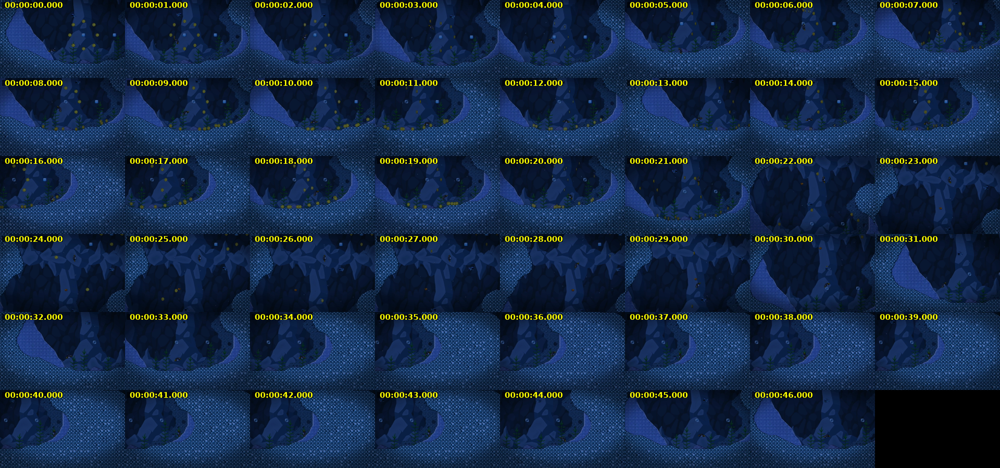
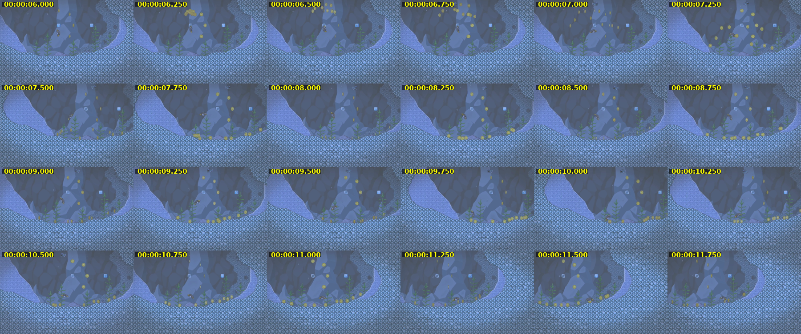
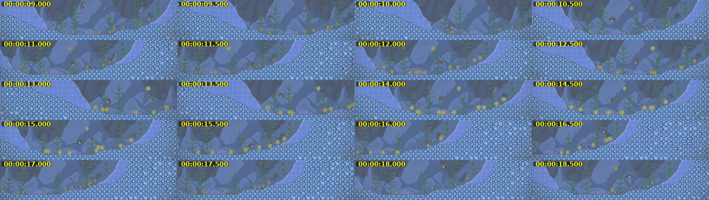
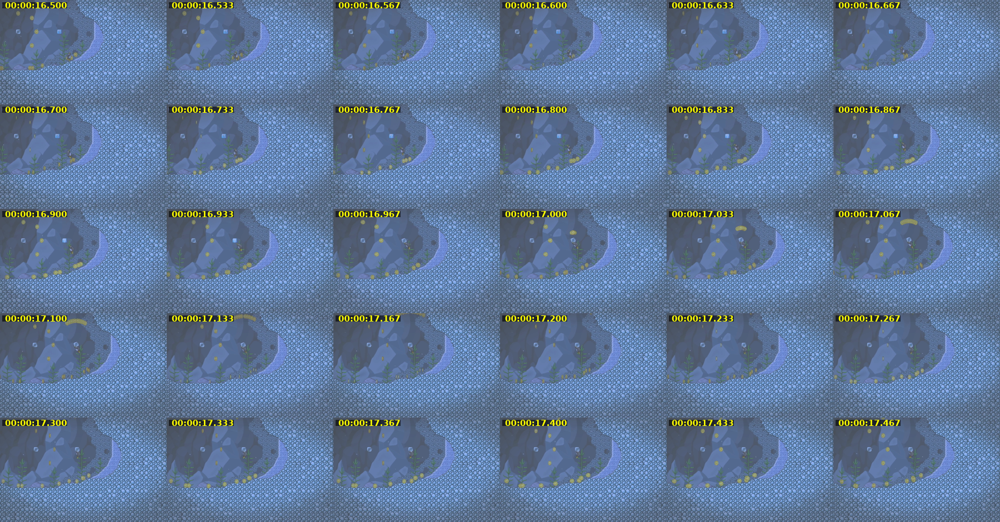
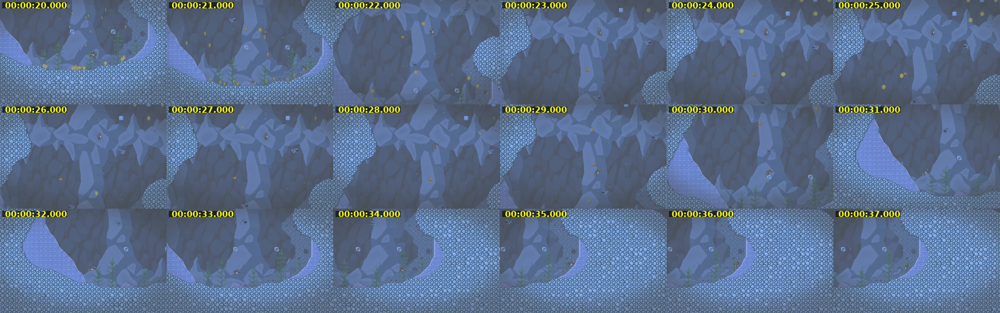

Eval: supertux__supertux_3729_mm
All 19 dimensions score 5. Local oracle 1.0 (twice, identical outcomes), nop 0.0 with 0/11 f2p and 2/2 p2p, fix.patch applies at harbor_base, and every shipped run's digest matches the delivered bundle (the no-image digest matches a rebuilt image-stripped copy). Trials meet Option A: 0/3 no-image, exactly 1/4 with-image. A 13-variant matrix in the task image shows each injected defect fails only its own f2p, and valid alternative fixes (other water caps, a constant sink speed, a level-bottom removal, other bounce thresholds) pass. Non-graded notes: ship the sandbox archives (the Windows folders are CRLF copies with a different checksum); most defects are code-discoverable, so image dependence rests mainly on the pickup failure.
Scorecard
Every dimension in rubric order. Click a cell to see what is wrong (or the evidence, if it passed).
Tasks.tar.gz (LF bytes): task.toml 3826, instruction.md 1033, evidence_bundle.json 2014, environment/Dockerfile 4479, environment/assets/ASSET_MANIFEST.json 669, solution/fix.patch 3532, solution/solve.sh 349, tests/config.json 1164, tests/test.patch 17422, tests/test.sh 11865, tests/verifier.py 6514. Inside the task image: the three JSON files parse, task.toml parses with tomllib, python3 -m py_compile verifier.py OK, bash -n tests/test.sh OK, bash -n solution/solve.sh OK. recording.mp4 decodes with ffprobe (h264 1280x800, 30 fps, 1416 frames, 47.2 s). Extras: environment/bugs/bug_01..05.patch (injected bugs, applied and deleted in one RUN) and environment/ca-certificates.crt (COPY'd by the Dockerfile) — not a fail.Tasks.tar.gz (unpacks to Tasks/supertux__supertux_3729_mm/), Trials.tar.gz (unpacks to Trials/with_images/ with 4 attempts and Trials/without_images/ with 3 attempts), plus Oracle.tar.gz, Nop.tar.gz, Check.tar.gz, Analyze.tar.gz, each unpacking to its own capitalised root folder. Tasks/ and Trials/ are root-level siblings; 7 trials = Option A.instruction.md points to /app/.harbor_assets/recording.mp4 (47 seconds), the path the Dockerfile COPYs to. The text names no defect: it says the released coins 'do not behave the way coins in this game should' and gives the expected life of a burst (spread out, come to rest, Tux goes back to collect them, drift down slowly from the moment they enter the basin's environment). Which behaviours are wrong is only in the video: coins dropping through the water at full speed (6.3–8 s), skating and hopping on the floor (8–16 s), Tux sweeping through resting coins without picking any up (11–16 s), the second burst streaking up and off-screen within about six frames (17.00–17.17 s), and the floor being empty when Tux comes back down (31–37 s) (contact sheets 01–05). Without the clip a developer can find suspicious lines by reading coin.cpp, but cannot tell which of them are bugs (is the bounce intended? is the off-screen removal a culling optimisation? should released coins be collectable?) or how slow the drift must be; the no-image runs say so ('The water numbers … are my choice, since I couldn't compare against the clip', eD5ZcTy). Trials are supporting evidence only: 0/3 no-image runs solved it.task_type = "temporal_interaction" — 'Fix a defect that only appears across a sequence of interactions / state transitions'. The text describes behaviour over a burst's whole life (spread → fall into water → land → rest → collection), defects that depend on an earlier event (the second burst only misbehaves after the first) and on a later state change (coins must still be there when Tux goes back after swimming away). That is a sequence-of-states defect, not a single rendered frame.recording.mp4 | bug_video | the buggy build: burst at ≈6.3 s whose coins fall to the floor in ≈1.5 s, skate/hop on the floor, Tux sweeps through them at 11–16 s without collecting, second burst at ≈17.0 s streaks up and off-screen within about six frames (17.00–17.17 s), camera follows Tux up at 22–30 s, floor empty at 31–37 s (contact sheets 01–05; local nop reproduces each: coin at the pool floor by 0.8 s, resting coin still moving ±4 px at 28.5–29.9 s, zones 0/0/0/0/0, off-screen coin GONE) | neutral name; role bug_video; instruction: 'uncut run through a cave basin', 'Twice during the clip … releases a group of new coins', placed coins/Tux/animals/scenery correct, 47 seconds | true (47.2 s; two bursts; placed Coin objects are untouched by the HeavyCoin defects); the extra second block and Tux's safe flag are disclosed in evidence_bundle.json | no — all 4 with-image runs treated the clip as the bug and found 3–6 of the defects in it. f2p ↔ asset: every f2p's precondition is reachable in the recorded scene and grades a defect the clip shows (water trio ↔ fall-through at 6.3–8 s; coins_settle ↔ hopping on the basin floor; landed_coins_come_to_rest ↔ skating; released_coins_can_be_collected / releases_full_burst / scatters_to_both_sides ↔ the floor sweep at 11–16 s (these three count pickups, so they need the pickup defect fixed); every_burst_comes_down ↔ the second burst; kept_while_out_of_view / collected_after_coming_back ↔ the empty floor at 31–37 s). Cross-check — Variant matrix, run in the task image (5 injected-bug fixes F1–F5 plus water W applied as source edits, then the hidden levels and evaluate_heavycoin.py; failing tests listed, all others pass): V0 golden-equivalent (F1–F5 + golden water) → all 11 f2p pass (zones 2/4/4/0/0, repeat 10/10, dropped coin y 147 at 1.0 s and 211 at 1.6 s). V1 bug_01 left (static velocity table scaled in place) → fails only every_burst_comes_down (zones 2/4/4/0/0, repeat 10/0, dropped coin y 147 at 1.0 s and 211 at 1.6 s). V2 bug_02 left (landing keeps x speed) → fails only landed_coins_come_to_rest, every_burst_comes_down (zones 0/2/1/3/4, repeat 8/10, dropped coin y 147 at 1.0 s and 211 at 1.6 s). V3 bug_03 left (COLGROUP_MOVING_ONLY_STATIC) → fails only released_coins_can_be_collected, releases_full_burst, scatters_to_both_sides, landed_coins_come_to_rest, every_burst_comes_down, collected_after_coming_back (zones 0/0/0/0/0, repeat 0/0, dropped coin y 147 at 1.0 s and 211 at 1.6 s). V4 bug_04 left (bounce threshold 20) → fails only coins_settle_on_floor, landed_coins_come_to_rest, every_burst_comes_down, kept_while_out_of_view (zones 0/2/1/3/4, repeat 7/10, dropped coin y 147 at 1.0 s and 211 at 1.6 s). V5 bug_05 left (update_visibility deletes coins below the camera) → fails only kept_while_out_of_view, collected_after_coming_back (zones 2/4/4/0/0, repeat 10/10, dropped coin y 147 at 1.0 s and 211 at 1.6 s). V6 no water handling → fails only floats_in_water_by_1s, still_sinking_at_1_6s, sinks_slowly_from_rest (zones 2/4/4/0/0, repeat 10/10, dropped coin y 384 at 1.0 s and 384 at 1.6 s). Fixing everything the clip shows (V0) passes every f2p, and each defect left alone fails only f2p that grade its visible consequence (sliding or endlessly hopping coins also leave the 1000 px window, so V2/V4 fail every_burst_comes_down too), so evidence and verifier agree. The six-test group that every failing trial missed is exactly V3's: the pickup defect. Step 7 (injected defects): a fix that skips bug_03 leaves every released coin uncollectable — the instruction says Tux 'goes back to collect them' and the clip shows the failed sweep — so it is an incomplete fix, not an alternative; same for bug_05 (coins gone when Tux returns, 31–37 s).temporal_interaction is one of the seven Step IV values. The evidence is a 47 s gameplay recording whose defects appear across interactions and state transitions (burst → water → landing → pickup; first burst → second burst; Tux leaves → returns). The table lists 'ordered screenshot / GIF sequence' as the usual evidence; a video is the same kind of evidence, and visual_bug_fix would also have been acceptable — the rubric says not to penalise a valid choice when another type might fit too.environment/assets/recording.mp4: 11,029,240 bytes, sha256 dab18243d9aa7aefb38e784e733f838dabae40de5041a632ca1e8f5e0bce4e8f (computed in the image). ASSET_MANIFEST.json: file recording.mp4, container_path /app/.harbor_assets/recording.mp4, bytes 11029240, sha256 dab18243… — match. evidence_bundle.json: role bug_video, local_path and container_path /app/.harbor_assets/recording.mp4, same bytes and sha256, source_kind captured_from_repo with empty url/source_url (valid for captured evidence). instruction.md: /app/.harbor_assets/recording.mp4. Dockerfile: COPY assets/recording.mp4 /app/.harbor_assets/; the file is present in the built image. All four references agree.harbor_base (single commit base, tag harbor_base, clean tree apart from the untracked .harbor_assets/): git apply --check /t/solution/fix.patch → applies cleanly. solve.sh applies it the same way in the local oracle (submission.patch 3520 bytes, 3 files).diff --git paths in fix.patch: src/object/coin.cpp, src/object/coin.hpp, src/object/coin_explode.cpp. task.toml files_edited: the same three. No test, doc, lockfile or changeset path.get_y(), coin counts via Tux.get_coins()); nothing inspects source, names, bytes or strings, so there is no output-form (spelling) risk. Value-level bands and their causes: dropped coin y < 300 over 0–1.0 s and < 374 over 0–1.6 s (golden: 147 and 211, sinking ≈106 px/s; any steady sink up to ≈250 px/s passes) ← 'drift down slowly, from the moment it enters'; resting coin < 368 at 1.0 s and ≥16 px further by 2.5 s (≥≈11 px/s) ← 'drift down slowly'; both coins still (±1 px) on the floor by 28.5 s ← 'come to rest' (consistent with the 11 px/s floor); ≥9 of 10 coins picked up, ≥2 per side, 0 beyond 1000 px ← the block throws 10 coins and a normal burst lands both sides within ≈300 px (golden 10/10, 3–4 per side, 0 far); each burst ≥9 ← 'each group … like a normal coin burst'; far coin present for 4 s and at rest at y≈3648 from 3 s, then exactly 1 picked up ← one coin dropped. Alternative-fix table (alternative | precedent in repo | valid? | test result): water = gravity×0.3 + fall-speed cap 80 (passing trial jKQDpeZ's form) | bullet/badguy water gravity 0.3 | valid, plausible | all 11 f2p pass (zones 2/4/4/0/0, repeat 10/10, dropped coin y 134 at 1.0 s and 187 at 1.6 s); water = constant 40 px/s sink, gravity off in water | none needed (common practice) | valid | all 11 f2p pass (zones 2/4/4/0/0, repeat 10/10, dropped coin y 99 at 1.0 s and 124 at 1.6 s); water = Rock's pattern, gravity×0.2 + movement×(0.4,0.6), NO cap (failing trials kzGxfkf, 6bfEx8o) | rock.cpp | NOT valid: the coin keeps its entry momentum and accelerates to ~340 px/s inside the water, reaching the floor (y 382) at 1.4 s, ~0.9 s after entering and 0.2 s before the 1.6 s limit, which contradicts the instruction's 'it should drift down slowly, from the moment it enters it'; a no-cap variant slow enough to keep the coin off the floor until 1.6 s would pass | fails only still_sinking_at_1_6s (zones 2/4/4/0/0, repeat 10/10, dropped coin y 253 at 1.0 s and 375 at 1.6 s); off-screen fix = keep the removal but only below the sector's bottom edge (passing trial jKQDpeZ's form) | n/a | valid, plausible | all 11 f2p pass (zones 2/4/4/0/0, repeat 10/10, dropped coin y 147 at 1.0 s and 211 at 1.6 s); bounce threshold 150 instead of 200 | n/a | valid | all 11 f2p pass (zones 2/4/4/0/0, repeat 10/10, dropped coin y 147 at 1.0 s and 211 at 1.6 s); no bounce at all (every landing stops the coin) | n/a | valid | all 11 f2p pass (zones 3/3/4/0/0, repeat 10/10, dropped coin y 147 at 1.0 s and 211 at 1.6 s); velocity table made static const std::array/std::vector and copied per burst (trials jKQDpeZ, kzGxfkf) | n/a | valid, plausible | passes every_burst_comes_down in jKQDpeZ (11/11); landing as set_velocity_x(0) + set_velocity_y(0) instead of set_velocity(0, 0) (all trials) | n/a | equivalent | passes landed_coins_come_to_rest in jKQDpeZ. Trial cross-check: every failing f2p in the 6 failing trials is a real miss — zones 0/0/0/0/0 (pickup group never fixed), the off-screen coin GONE (bug_05 not fixed, fbHk2fa), or a coin at y 366–382 by 1.4–1.5 s (no fall-speed cap: B7CpKVa, kzGxfkf, 6bfEx8o).load_junit/resolve, each of the 13 ids matches exactly one of the 13 testcases in the local oracle, local nop and CB oracle junit.xml.HeavyCoinWaterTest.produces_trajectory and HeavyCoinWaterTest.still_falling_before_water pass on local nop, local oracle, oracle re-run and the CB's nop/oracle (2/2 each).--renderer null --disable-sound --disable-music, SDL dummy drivers), no fonts, no network; test.sh installs nothing (it only restores build mtimes, rebuilds incrementally and runs four levels with an 80 s cap), so [verifier] network_mode = "public" needs no allowlist. Samples are taken in game time (wait(0.1)), not wall time. The only randomness is the burst's per-coin magnitude (gameRandom, time-seeded); the assertions are counts with margin. Evidence: CB oracle (sandbox) vs local oracle vs local re-run — water series, repeat counts and off-screen series byte-identical; burst zones 2/4/4/0/0, 2/4/4/0/0 and 3/3/4/0/0, all 10/10 with ≥3 per side and 0 far. Per-test outcomes identical in all three oracle runs./app/.harbor_assets/ empty — eD5ZcTy and ivMzckG say so explicitly, 6bfEx8o calls the recording 'missing'). With-image: exactly 1/4 pass (jKQDpeZ 11/11; B7CpKVa, fbHk2fa, kzGxfkf 4/11). Runs told apart by job (Trials/with_images, Trials/without_images) and task path (task_with_images, task_without_images). Agent time 13.0–17.3 min, total 17.1–21.1 min per attempt (informational).set_velocity(0, 0), COLGROUP_MOVING, threshold 200, delete the removal). Every defect is visible in the recording and its expected behaviour is stated in the text. jKQDpeZ solved all six from symptom + video in 13 minutes.== applying test.patch ==, == running f2p + p2p tests ==, == computing reward ==) and reward=; no 'could not apply test.patch'. The verifier's incremental build works: restored build mtimes: 524, then 10 steps for the oracle (files including coin.hpp) instead of a full rebuild. The CB's shipped Oracle (1.0) and Nop (0.0) match.Delivery gate
Process checks run locally or read from the submitted runs. Each failure is scored under the dimension it belongs to, not as an extra dimension.
git apply --check OK in the built image; test.patch also appliesreward= in all local and CB runs; test.patch applied; incremental rebuild (restored build mtimes: 524)/app/.harbor_assets/ empty in all three8818e51e… = Oracle, Nop and with_images lock digests; without_images 0b49721e… = reviewer-rebuilt image-stripped copy of the same bundle (exact match)1b365f70…); ship the archives, never a re-tar of these folderstestsh_syntax) and stray_files are Windows-host artifacts (WSL bash, backslash paths) — bash -n passes in the image; 21 PENDING overfit heuristics settled by the variant matrix-a oracle|nop -e docker --extra-docker-compose tarfix.yaml); the runner's QC-marker gate was blocked only by the Windows false positives above[agent] network_mode relaxed to public in the reviewer copy only: harbor's docker environment on this Windows host rejects no-network; oracle/nop run no agent, so results are unaffectedTrials
3 no-image runs (pass@3, all must fail) and 4 with-image runs (pass@4, exactly 1 must pass). Rewards come from each run's verifier/reward.txt.
| Trial | Mode | Reward | f2p | p2p | Min | Failed tests |
|---|---|---|---|---|---|---|
task_without_images__6bfEx8o | no-image | 0.0 | 4/11 | 2/2 | 13.5 | still_sinking_at_1_6s releases_full_burst scatters_to_both_sides landed_coins_come_to_rest released_coins_can_be_collected every_burst_comes_down collected_after_coming_back |
task_without_images__eD5ZcTy | no-image | 0.0 | 5/11 | 2/2 | 13.2 | releases_full_burst scatters_to_both_sides landed_coins_come_to_rest released_coins_can_be_collected every_burst_comes_down collected_after_coming_back |
task_without_images__ivMzckG | no-image | 0.0 | 5/11 | 2/2 | 13.7 | releases_full_burst scatters_to_both_sides landed_coins_come_to_rest released_coins_can_be_collected every_burst_comes_down collected_after_coming_back |
task_with_images__B7CpKVa | with-image | 0.0 | 4/11 | 2/2 | 17.2 | still_sinking_at_1_6s releases_full_burst scatters_to_both_sides landed_coins_come_to_rest released_coins_can_be_collected every_burst_comes_down collected_after_coming_back |
task_with_images__fbHk2fa | with-image | 0.0 | 4/11 | 2/2 | 17.1 | releases_full_burst scatters_to_both_sides landed_coins_come_to_rest released_coins_can_be_collected every_burst_comes_down kept_while_out_of_view collected_after_coming_back |
task_with_images__jKQDpeZ | with-image | 1.0 | 11/11 | 2/2 | 13.0 | — |
task_with_images__kzGxfkf | with-image | 0.0 | 4/11 | 2/2 | 17.3 | still_sinking_at_1_6s releases_full_burst scatters_to_both_sides landed_coins_come_to_rest released_coins_can_be_collected every_burst_comes_down collected_after_coming_back |
Issues & suggested fixes
No issues found.
Dimension details
1. Structure – Task Bundle Files 5 · Pass
| Evidence | All 11 fixed files are present and non-empty in the delivered Tasks.tar.gz (LF bytes): task.toml 3826, instruction.md 1033, evidence_bundle.json 2014, environment/Dockerfile 4479, environment/assets/ASSET_MANIFEST.json 669, solution/fix.patch 3532, solution/solve.sh 349, tests/config.json 1164, tests/test.patch 17422, tests/test.sh 11865, tests/verifier.py 6514. Inside the task image: the three JSON files parse, task.toml parses with tomllib, python3 -m py_compile verifier.py OK, bash -n tests/test.sh OK, bash -n solution/solve.sh OK. recording.mp4 decodes with ffprobe (h264 1280x800, 30 fps, 1416 frames, 47.2 s). Extras: environment/bugs/bug_01..05.patch (injected bugs, applied and deleted in one RUN) and environment/ca-certificates.crt (COPY'd by the Dockerfile) — not a fail. |
|---|---|
| What is wrong | Nothing found. Non-graded note: the local QC audit (fix.py qc, run on this Windows host) reported testsh_syntax FAIL and stray_files; both are host artifacts — it ran bash -n through Windows' WSL bash.exe, which cannot see a C:\ path, and compared backslash paths against a / layout. bash -n tests/test.sh passes in the task image. |
| Suggested fix | None. |
2. Structure – Deliverables & Packaging 5 · Pass
| Evidence | Attempt10 holds Tasks.tar.gz (unpacks to Tasks/supertux__supertux_3729_mm/), Trials.tar.gz (unpacks to Trials/with_images/ with 4 attempts and Trials/without_images/ with 3 attempts), plus Oracle.tar.gz, Nop.tar.gz, Check.tar.gz, Analyze.tar.gz, each unpacking to its own capitalised root folder. Tasks/ and Trials/ are root-level siblings; 7 trials = Option A. |
|---|---|
| What is wrong | Nothing found. Non-graded note: the folders next to the archives (task103/Attempt10/Tasks/, and the working copy task103/Tasks/) are the same files with CRLF line endings; their harbor digest is 1b365f70…, not the 8818e51e… every run used. Ship the sandbox-built archives as they are; re-packing the Windows folders would change the task checksum (every trial would have to be re-run) and put CRLF into test.sh. |
| Suggested fix | None. Deliver the existing .tar.gz files, not a re-tar of the Windows folders. |
3. Instruction – Requires the Visual Evidence 5 · Pass
| Evidence | instruction.md points to /app/.harbor_assets/recording.mp4 (47 seconds), the path the Dockerfile COPYs to. The text names no defect: it says the released coins 'do not behave the way coins in this game should' and gives the expected life of a burst (spread out, come to rest, Tux goes back to collect them, drift down slowly from the moment they enter the basin's environment). Which behaviours are wrong is only in the video: coins dropping through the water at full speed (6.3–8 s), skating and hopping on the floor (8–16 s), Tux sweeping through resting coins without picking any up (11–16 s), the second burst streaking up and off-screen within about six frames (17.00–17.17 s), and the floor being empty when Tux comes back down (31–37 s) (contact sheets 01–05). Without the clip a developer can find suspicious lines by reading coin.cpp, but cannot tell which of them are bugs (is the bounce intended? is the off-screen removal a culling optimisation? should released coins be collectable?) or how slow the drift must be; the no-image runs say so ('The water numbers … are my choice, since I couldn't compare against the clip', eD5ZcTy). Trials are supporting evidence only: 0/3 no-image runs solved it. |
|---|---|
| What is wrong | Nothing found. Non-graded note: careful code reading recovers most defects — eD5ZcTy and ivMzckG fixed the static velocity table, slide, bounce, off-screen deletion and water without the video; all three no-image runs missed only the pickup collision group. The image dependence therefore rests mostly on the pickup failure and on confirming which oddities are defects. |
| Suggested fix | None. |
4. Instruction – Symptom Specificity 5 · Pass
| Evidence | Table (element | defect text/image | expected text/image | comparison image | clue left to image | described correctly?): 'the released coins' / 'a group of new coins' (element named by type) | text: 'do not behave the way coins in this game should', 'Fix every way the released coins behave wrongly', with context in the same paragraph (from the first release to the end of the clip; placed coins, Tux, animals and scenery are correct) | text: 'behave like a normal coin burst … from the moment they spread out of their block until they come to rest and Tux goes back to collect them'; 'it should drift down slowly, from the moment it enters it' | none (single bug video; the reference is the game's normal coin burst) | which burst, what triggers it (the block bump is 'Tux does something'), when each defect shows, how far the second burst flies, that coins vanish off-screen | yes — water is called 'the basin's surrounding environment', and every trial (with and without images) read it as water and added water handling. Each f2p maps to an expected result in the text: water trio ↔ 'drift down slowly from the moment it enters'; coins_settle/landed ↔ 'come to rest'; collectable/collected_after_coming_back ↔ 'Tux goes back to collect them'; full burst/scatter/every_burst ↔ 'each group … like a normal coin burst'; kept_while_out_of_view ↔ coins still there when Tux goes back. Trajectories: B7CpKVa and kzGxfkf list water, bounce/slide, second burst and vanishing as defects; fbHk2fa lists second burst, slide/bounce and water and attributes the pickup failure to sliding ('stop dead where Tux can collect them'); jKQDpeZ lists all six. No run took a defect for intended behaviour. |
|---|---|
| What is wrong | Nothing found. Non-graded note: the advisory scan flags 'Tux does something' and 'behave wrongly' as vague; both are followed in the same paragraph by the affected element and the expected behaviour, so the rubric's 'phrase stands alone' case does not apply. |
| Suggested fix | None. |
5. Instruction – Task Type 5 · Pass
| Evidence | task_type = "temporal_interaction" — 'Fix a defect that only appears across a sequence of interactions / state transitions'. The text describes behaviour over a burst's whole life (spread → fall into water → land → rest → collection), defects that depend on an earlier event (the second burst only misbehaves after the first) and on a later state change (coins must still be there when Tux goes back after swimming away). That is a sequence-of-states defect, not a single rendered frame. |
|---|---|
| What is wrong | Nothing found. |
| Suggested fix | None. |
6. Image – Evidence Quality 5 · Pass
| Evidence | Naming table (file | role | what the frames show, how verified | what name/role/instruction claim | true? | agents confused?): recording.mp4 | bug_video | the buggy build: burst at ≈6.3 s whose coins fall to the floor in ≈1.5 s, skate/hop on the floor, Tux sweeps through them at 11–16 s without collecting, second burst at ≈17.0 s streaks up and off-screen within about six frames (17.00–17.17 s), camera follows Tux up at 22–30 s, floor empty at 31–37 s (contact sheets 01–05; local nop reproduces each: coin at the pool floor by 0.8 s, resting coin still moving ±4 px at 28.5–29.9 s, zones 0/0/0/0/0, off-screen coin GONE) | neutral name; role bug_video; instruction: 'uncut run through a cave basin', 'Twice during the clip … releases a group of new coins', placed coins/Tux/animals/scenery correct, 47 seconds | true (47.2 s; two bursts; placed Coin objects are untouched by the HeavyCoin defects); the extra second block and Tux's safe flag are disclosed in evidence_bundle.json | no — all 4 with-image runs treated the clip as the bug and found 3–6 of the defects in it. f2p ↔ asset: every f2p's precondition is reachable in the recorded scene and grades a defect the clip shows (water trio ↔ fall-through at 6.3–8 s; coins_settle ↔ hopping on the basin floor; landed_coins_come_to_rest ↔ skating; released_coins_can_be_collected / releases_full_burst / scatters_to_both_sides ↔ the floor sweep at 11–16 s (these three count pickups, so they need the pickup defect fixed); every_burst_comes_down ↔ the second burst; kept_while_out_of_view / collected_after_coming_back ↔ the empty floor at 31–37 s). Cross-check — Variant matrix, run in the task image (5 injected-bug fixes F1–F5 plus water W applied as source edits, then the hidden levels and evaluate_heavycoin.py; failing tests listed, all others pass): V0 golden-equivalent (F1–F5 + golden water) → all 11 f2p pass (zones 2/4/4/0/0, repeat 10/10, dropped coin y 147 at 1.0 s and 211 at 1.6 s). V1 bug_01 left (static velocity table scaled in place) → fails only every_burst_comes_down (zones 2/4/4/0/0, repeat 10/0, dropped coin y 147 at 1.0 s and 211 at 1.6 s). V2 bug_02 left (landing keeps x speed) → fails only landed_coins_come_to_rest, every_burst_comes_down (zones 0/2/1/3/4, repeat 8/10, dropped coin y 147 at 1.0 s and 211 at 1.6 s). V3 bug_03 left (COLGROUP_MOVING_ONLY_STATIC) → fails only released_coins_can_be_collected, releases_full_burst, scatters_to_both_sides, landed_coins_come_to_rest, every_burst_comes_down, collected_after_coming_back (zones 0/0/0/0/0, repeat 0/0, dropped coin y 147 at 1.0 s and 211 at 1.6 s). V4 bug_04 left (bounce threshold 20) → fails only coins_settle_on_floor, landed_coins_come_to_rest, every_burst_comes_down, kept_while_out_of_view (zones 0/2/1/3/4, repeat 7/10, dropped coin y 147 at 1.0 s and 211 at 1.6 s). V5 bug_05 left (update_visibility deletes coins below the camera) → fails only kept_while_out_of_view, collected_after_coming_back (zones 2/4/4/0/0, repeat 10/10, dropped coin y 147 at 1.0 s and 211 at 1.6 s). V6 no water handling → fails only floats_in_water_by_1s, still_sinking_at_1_6s, sinks_slowly_from_rest (zones 2/4/4/0/0, repeat 10/10, dropped coin y 384 at 1.0 s and 384 at 1.6 s). Fixing everything the clip shows (V0) passes every f2p, and each defect left alone fails only f2p that grade its visible consequence (sliding or endlessly hopping coins also leave the 1000 px window, so V2/V4 fail every_burst_comes_down too), so evidence and verifier agree. The six-test group that every failing trial missed is exactly V3's: the pickup defect. Step 7 (injected defects): a fix that skips bug_03 leaves every released coin uncollectable — the instruction says Tux 'goes back to collect them' and the clip shows the failed sweep — so it is an incomplete fix, not an alternative; same for bug_05 (coins gone when Tux returns, 31–37 s). |
|---|---|
| What is wrong | Nothing found. Non-graded note: the pickup failure is the subtlest defect in the clip (it shows only as coins remaining after Tux's floor sweep at 11–16 s, because bug_05 empties the floor before his return); three of four with-image runs missed it. That is difficulty, not bad evidence. |
| Suggested fix | None. |
7. Metadata – task_type Accuracy 5 · Pass
| Evidence | temporal_interaction is one of the seven Step IV values. The evidence is a 47 s gameplay recording whose defects appear across interactions and state transitions (burst → water → landing → pickup; first burst → second burst; Tux leaves → returns). The table lists 'ordered screenshot / GIF sequence' as the usual evidence; a video is the same kind of evidence, and visual_bug_fix would also have been acceptable — the rubric says not to penalise a valid choice when another type might fit too. |
|---|---|
| What is wrong | Nothing found. |
| Suggested fix | None. |
8. Evidence – Chain Consistency 5 · Pass
| Evidence | File on disk environment/assets/recording.mp4: 11,029,240 bytes, sha256 dab18243d9aa7aefb38e784e733f838dabae40de5041a632ca1e8f5e0bce4e8f (computed in the image). ASSET_MANIFEST.json: file recording.mp4, container_path /app/.harbor_assets/recording.mp4, bytes 11029240, sha256 dab18243… — match. evidence_bundle.json: role bug_video, local_path and container_path /app/.harbor_assets/recording.mp4, same bytes and sha256, source_kind captured_from_repo with empty url/source_url (valid for captured evidence). instruction.md: /app/.harbor_assets/recording.mp4. Dockerfile: COPY assets/recording.mp4 /app/.harbor_assets/; the file is present in the built image. All four references agree. |
|---|---|
| What is wrong | Nothing found. |
| Suggested fix | None. |
9. Golden Fix – Applies Cleanly 5 · Pass
| Evidence | In the built task image at harbor_base (single commit base, tag harbor_base, clean tree apart from the untracked .harbor_assets/): git apply --check /t/solution/fix.patch → applies cleanly. solve.sh applies it the same way in the local oracle (submission.patch 3520 bytes, 3 files). |
|---|---|
| What is wrong | Nothing found. |
| Suggested fix | None. |
10. Golden Fix – Source-Only Scope 5 · Pass
| Evidence | diff --git paths in fix.patch: src/object/coin.cpp, src/object/coin.hpp, src/object/coin_explode.cpp. task.toml files_edited: the same three. No test, doc, lockfile or changeset path. |
|---|---|
| What is wrong | Nothing found. |
| Suggested fix | None. |
11. Tests – Implementation Overfit 5 · Pass
| Evidence | All assertions read the game's behaviour from logs printed by hidden Squirrel levels (coin y positions via get_y(), coin counts via Tux.get_coins()); nothing inspects source, names, bytes or strings, so there is no output-form (spelling) risk. Value-level bands and their causes: dropped coin y < 300 over 0–1.0 s and < 374 over 0–1.6 s (golden: 147 and 211, sinking ≈106 px/s; any steady sink up to ≈250 px/s passes) ← 'drift down slowly, from the moment it enters'; resting coin < 368 at 1.0 s and ≥16 px further by 2.5 s (≥≈11 px/s) ← 'drift down slowly'; both coins still (±1 px) on the floor by 28.5 s ← 'come to rest' (consistent with the 11 px/s floor); ≥9 of 10 coins picked up, ≥2 per side, 0 beyond 1000 px ← the block throws 10 coins and a normal burst lands both sides within ≈300 px (golden 10/10, 3–4 per side, 0 far); each burst ≥9 ← 'each group … like a normal coin burst'; far coin present for 4 s and at rest at y≈3648 from 3 s, then exactly 1 picked up ← one coin dropped. Alternative-fix table (alternative | precedent in repo | valid? | test result): water = gravity×0.3 + fall-speed cap 80 (passing trial jKQDpeZ's form) | bullet/badguy water gravity 0.3 | valid, plausible | all 11 f2p pass (zones 2/4/4/0/0, repeat 10/10, dropped coin y 134 at 1.0 s and 187 at 1.6 s); water = constant 40 px/s sink, gravity off in water | none needed (common practice) | valid | all 11 f2p pass (zones 2/4/4/0/0, repeat 10/10, dropped coin y 99 at 1.0 s and 124 at 1.6 s); water = Rock's pattern, gravity×0.2 + movement×(0.4,0.6), NO cap (failing trials kzGxfkf, 6bfEx8o) | rock.cpp | NOT valid: the coin keeps its entry momentum and accelerates to ~340 px/s inside the water, reaching the floor (y 382) at 1.4 s, ~0.9 s after entering and 0.2 s before the 1.6 s limit, which contradicts the instruction's 'it should drift down slowly, from the moment it enters it'; a no-cap variant slow enough to keep the coin off the floor until 1.6 s would pass | fails only still_sinking_at_1_6s (zones 2/4/4/0/0, repeat 10/10, dropped coin y 253 at 1.0 s and 375 at 1.6 s); off-screen fix = keep the removal but only below the sector's bottom edge (passing trial jKQDpeZ's form) | n/a | valid, plausible | all 11 f2p pass (zones 2/4/4/0/0, repeat 10/10, dropped coin y 147 at 1.0 s and 211 at 1.6 s); bounce threshold 150 instead of 200 | n/a | valid | all 11 f2p pass (zones 2/4/4/0/0, repeat 10/10, dropped coin y 147 at 1.0 s and 211 at 1.6 s); no bounce at all (every landing stops the coin) | n/a | valid | all 11 f2p pass (zones 3/3/4/0/0, repeat 10/10, dropped coin y 147 at 1.0 s and 211 at 1.6 s); velocity table made static const std::array/std::vector and copied per burst (trials jKQDpeZ, kzGxfkf) | n/a | valid, plausible | passes every_burst_comes_down in jKQDpeZ (11/11); landing as set_velocity_x(0) + set_velocity_y(0) instead of set_velocity(0, 0) (all trials) | n/a | equivalent | passes landed_coins_come_to_rest in jKQDpeZ. Trial cross-check: every failing f2p in the 6 failing trials is a real miss — zones 0/0/0/0/0 (pickup group never fixed), the off-screen coin GONE (bug_05 not fixed, fbHk2fa), or a coin at y 366–382 by 1.4–1.5 s (no fall-speed cap: B7CpKVa, kzGxfkf, 6bfEx8o). |
|---|---|
| What is wrong | Nothing found. The local static audit's 21 PENDING overfit items ('asserts on min', 'no assertion QC can read') are heuristics that cannot see log-based assertions; the matrix above settles them. |
| Suggested fix | None. |
12. Tests – f2p/p2p Identifier Validity 5 · Pass
| Evidence | task.toml and tests/config.json lists are identical (11 f2p, 2 p2p; checked with tomllib/json in the image). Using verifier.py's own load_junit/resolve, each of the 13 ids matches exactly one of the 13 testcases in the local oracle, local nop and CB oracle junit.xml. |
|---|---|
| What is wrong | Nothing found. |
| Suggested fix | None. |
13. Tests – p2p Classification 5 · Pass
| Evidence | HeavyCoinWaterTest.produces_trajectory and HeavyCoinWaterTest.still_falling_before_water pass on local nop, local oracle, oracle re-run and the CB's nop/oracle (2/2 each). |
|---|---|
| What is wrong | Nothing found. |
| Suggested fix | None. |
14. Tests – Discriminating (f2p) 5 · Pass
| Evidence | Local nop: all 11 f2p fail (coin on the pool floor by 0.8 s; resting coin still moving at 28.5–29.9 s; zones 0/0/0/0/0; repeat 0/0; off-screen coin GONE; FAR_PICKED 0). Local oracle and re-run: all 11 pass. Same on the CB's runs. The matrix shows each injected defect, left alone, fails its own f2p. |
|---|---|
| What is wrong | Nothing found. |
| Suggested fix | None. |
15. Tests – Determinism 5 · Pass
| Evidence | Headless (--renderer null --disable-sound --disable-music, SDL dummy drivers), no fonts, no network; test.sh installs nothing (it only restores build mtimes, rebuilds incrementally and runs four levels with an 80 s cap), so [verifier] network_mode = "public" needs no allowlist. Samples are taken in game time (wait(0.1)), not wall time. The only randomness is the burst's per-coin magnitude (gameRandom, time-seeded); the assertions are counts with margin. Evidence: CB oracle (sandbox) vs local oracle vs local re-run — water series, repeat counts and off-screen series byte-identical; burst zones 2/4/4/0/0, 2/4/4/0/0 and 3/3/4/0/0, all 10/10 with ≥3 per side and 0 far. Per-test outcomes identical in all three oracle runs. |
|---|---|
| What is wrong | Nothing found. |
| Suggested fix | None. |
16. Hardening – Difficulty (Model Trial Fails) 5 · Pass
| Evidence | Option A, 7 trials. No-image: 0/3 pass (6bfEx8o 4/11, eD5ZcTy 5/11, ivMzckG 5/11; /app/.harbor_assets/ empty — eD5ZcTy and ivMzckG say so explicitly, 6bfEx8o calls the recording 'missing'). With-image: exactly 1/4 pass (jKQDpeZ 11/11; B7CpKVa, fbHk2fa, kzGxfkf 4/11). Runs told apart by job (Trials/with_images, Trials/without_images) and task path (task_with_images, task_without_images). Agent time 13.0–17.3 min, total 17.1–21.1 min per attempt (informational). |
|---|---|
| What is wrong | Nothing found. |
| Suggested fix | None. |
17. Hardening – Real & Feasible 5 · Pass
| Evidence | The upstream issue (#3729, heavy coins ignoring water in Deep Dive 'n' Chill) is real; the golden water handling (reduced gravity plus a capped drop speed) is the fix the task cites (PR #3771, fix_commit d1d16705; upstream was not re-fetched during this review). The five injected defects are coherent, single-concern mistakes a real developer could make: a function-static table scaled in place, a landing branch that clears only y, a collision group that excludes the player, a bounce threshold of 20 instead of 200, and a helper that removes coins below the camera. Each fix is a normal one- or few-line change a contributor would write (restore the copy, set_velocity(0, 0), COLGROUP_MOVING, threshold 200, delete the removal). Every defect is visible in the recording and its expected behaviour is stated in the text. jKQDpeZ solved all six from symptom + video in 13 minutes. |
|---|---|
| What is wrong | Nothing found. |
| Suggested fix | None. |
18. Gate – Oracle/Nop 5 · Pass
| Evidence | Local harbor 0.18.0 runs on the delivered bundle (docker): oracle 1.0 (f2p 11/11, p2p 2/2, 6m00s incl. image build), nop 0.0 (f2p 0/11, p2p 2/2, 1m56s), oracle re-run 1.0 with identical per-test outcomes (2m07s). All runs print the stage banners (== applying test.patch ==, == running f2p + p2p tests ==, == computing reward ==) and reward=; no 'could not apply test.patch'. The verifier's incremental build works: restored build mtimes: 524, then 10 steps for the oracle (files including coin.hpp) instead of a full rebuild. The CB's shipped Oracle (1.0) and Nop (0.0) match. |
|---|---|
| What is wrong | Nothing found. |
| Suggested fix | None. |
19. Unauditable 5 · Pass
| Evidence | Complete, auditable submission: bundle, oracle, nop, 7 trials, check and analyze, all tied to the delivered bundle by digest. |
|---|---|
| What is wrong | Nothing found. |
| Suggested fix | None. |
Visual evidence




